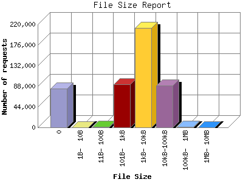

Analog 5.32
Analog 5.32 Report Magic 2.16
Report Magic 2.16The File Size Report categorizes the size of the file being requested. This can be useful in optimizing site performance. (Remember that on a 28.8Kps modem, it will take on average of 40 seconds to download 100Kb of data.)

| File Size | Number of requests | Percentage of the bytes | |
|---|---|---|---|
| 1. | 0 | 82,684 | 0.00% |
| 2. | 1B- 10B | 43 | 0.00% |
| 3. | 11B- 100B | 1,461 | 0.00% |
| 4. | 101B- 1kB | 91,606 | 1.56% |
| 5. | 1kB- 10kB | 211,895 | 17.25% |
| 6. | 10kB-100kB | 89,195 | 59.85% |
| 7. | 100kB- 1MB | 1,731 | 11.21% |
| 8. | 1MB- 10MB | 192 | 10.12% |
This report was generated on March 2, 2005 10:49.
Report time frame March 9, 2003 20:57 to February 15, 2005 03:11.
| Web statistics report produced by: | |
| Analog 5.32 | Report Magic 2.16 |